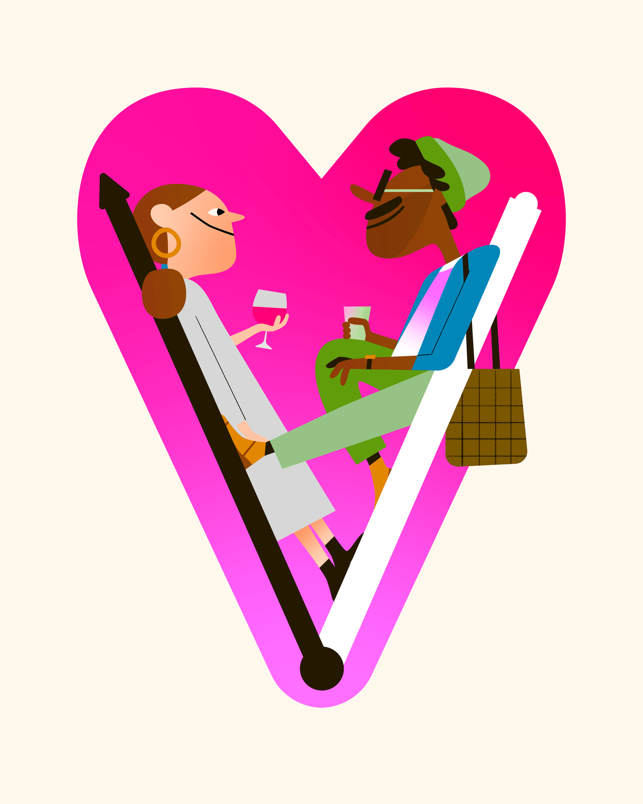
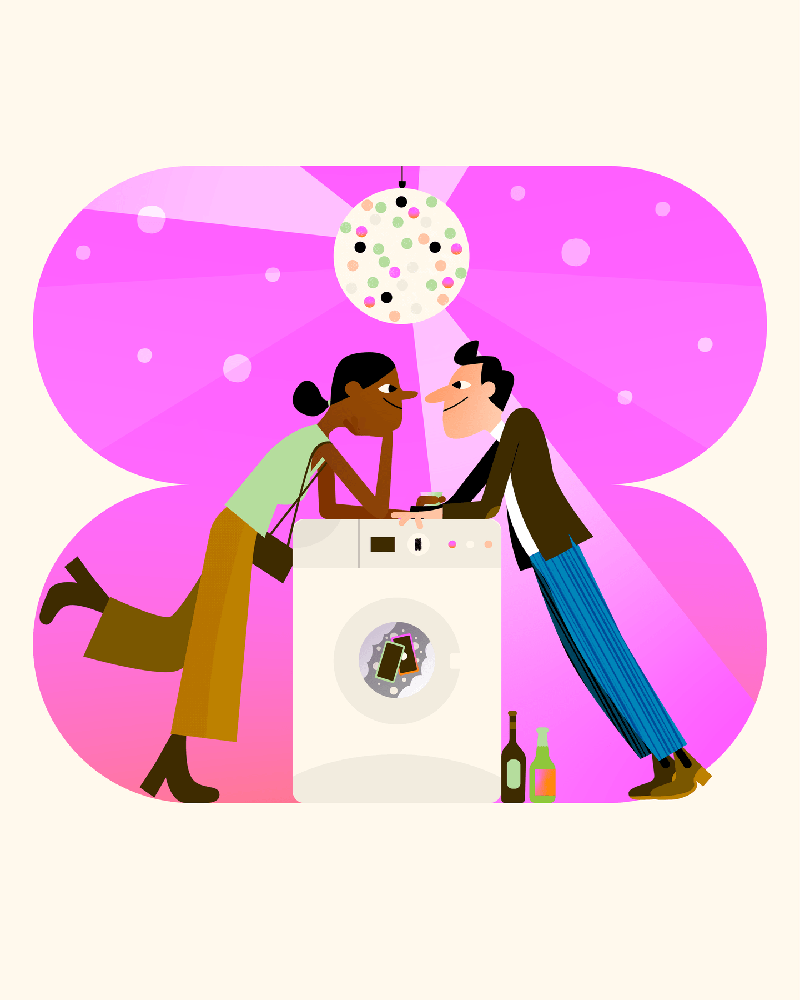
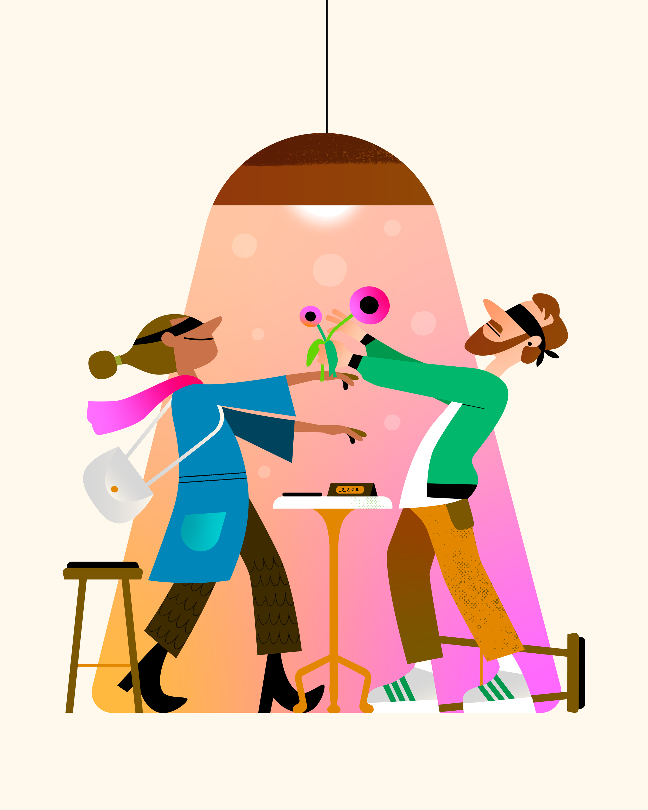

Offline Dating

- Client
- Positive News
- Year
- 2026
- Discipline
- Editorial
Three illustrations commissioned by Positive News to accompany a feature on offline dating: the different ways people are meeting, connecting, and building relationships outside the apps. The brief asked for images that could hold the full tonal range of the subject: the awkwardness, the hope, the occasional absurdity. Published across print and digital.

